Ogni contributo verifica fonti primarie e indica cosa cambia per il destinatario. Mai marketing, mai pareri travestiti.
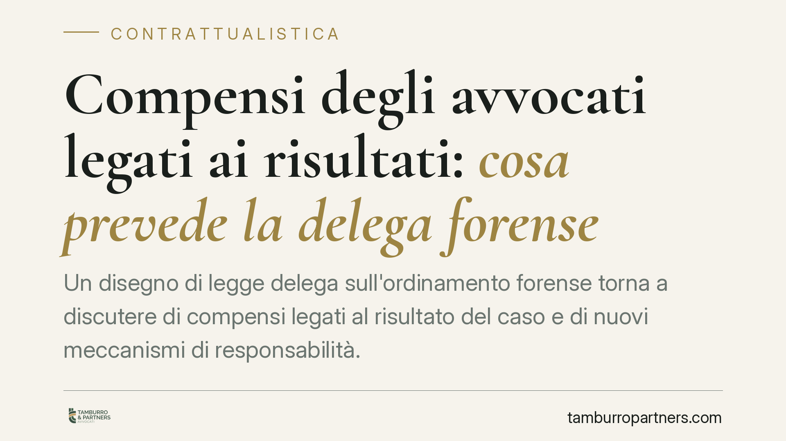
Un disegno di legge delega sull'ordinamento forense torna a discutere di compensi legati al risultato del caso e di nuovi meccanismi di responsabilità. Trattandosi di una delega in…
Chi affida lavori a un tecnico in casa propria non è sempre estraneo alle conseguenze di un infortunio. La Cassazione penale ha confermato la condanna di una proprietaria per la mo…
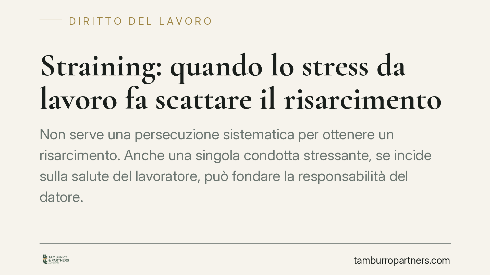
Non serve una persecuzione sistematica per ottenere un risarcimento. Anche una singola condotta stressante, se incide sulla salute del lavoratore, può fondare la responsabilità del…
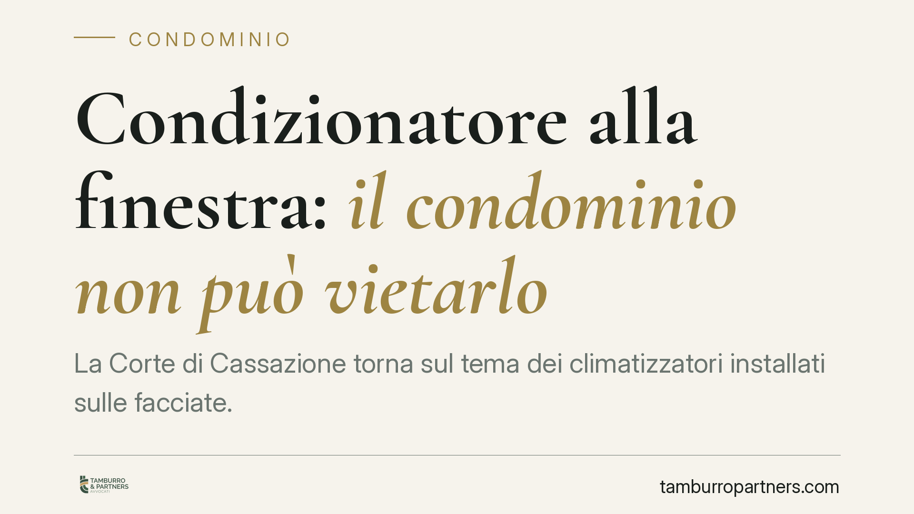
La Corte di Cassazione torna sul tema dei climatizzatori installati sulle facciate. Il principio è netto: il condomino può montare l'unità esterna su spazi di sua proprietà esclusi…
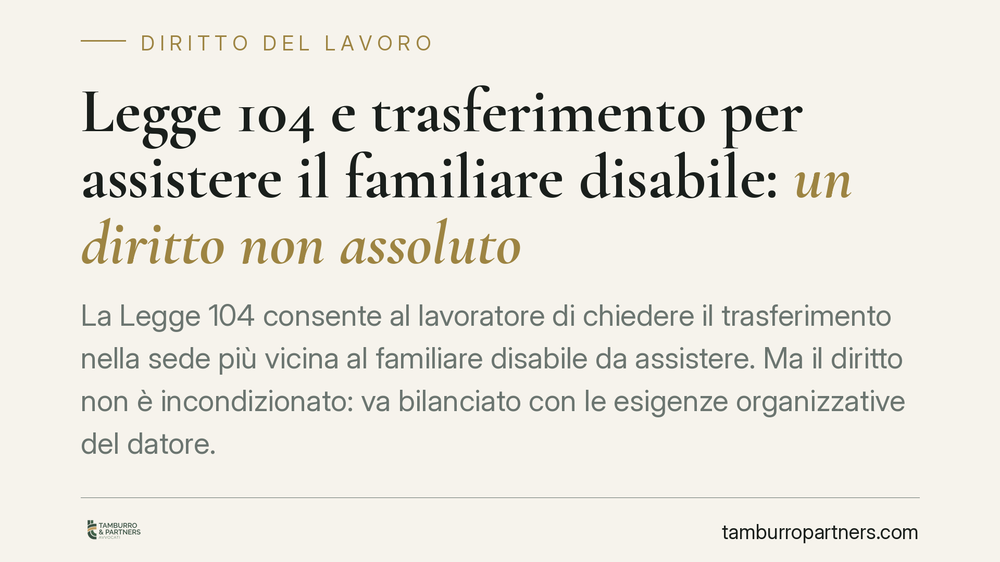
La Legge 104 consente al lavoratore di chiedere il trasferimento nella sede più vicina al familiare disabile da assistere. Ma il diritto non è incondizionato: va bilanciato con le …
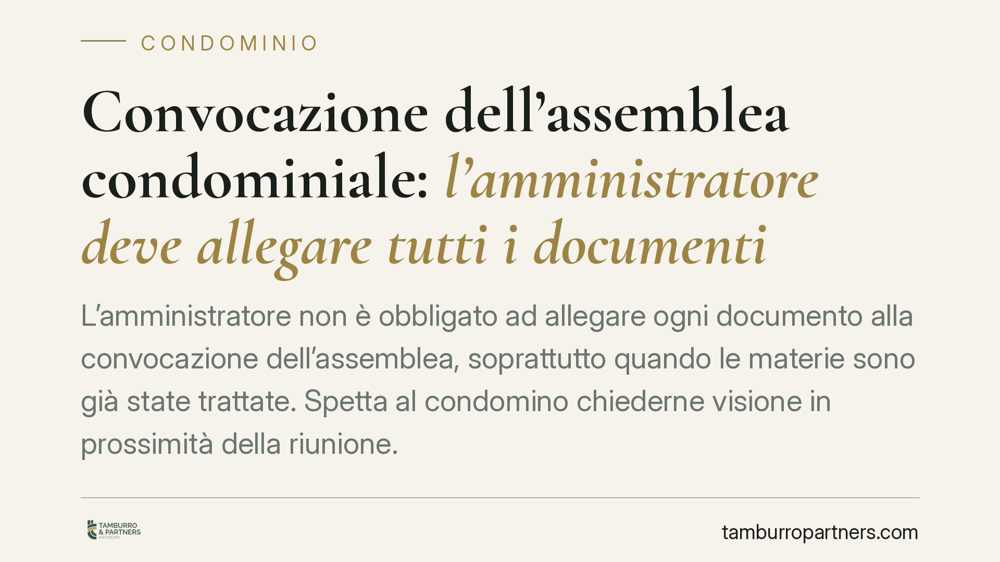
L'amministratore non è obbligato ad allegare ogni documento alla convocazione dell'assemblea, soprattutto quando le materie sono già state trattate. Spetta al condomino chiederne v…
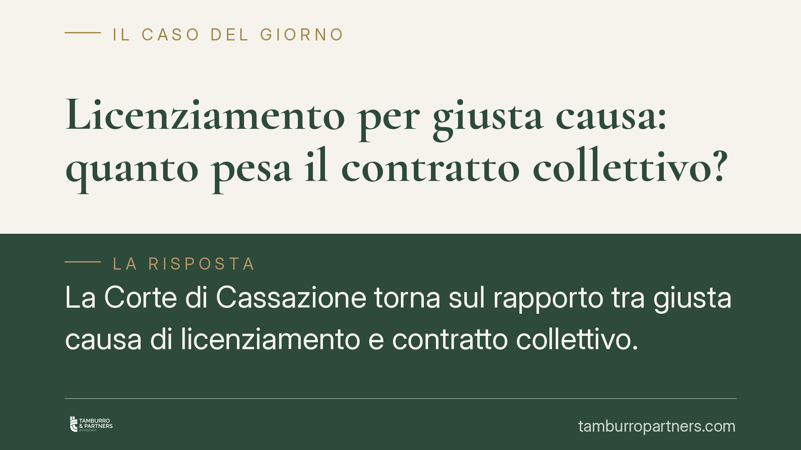
La Corte di Cassazione torna sul rapporto tra giusta causa di licenziamento e contratto collettivo. Il giudice può ritenere giustificato un licenziamento anche se il CCNL non lo pr…
Un condomino regolarmente convocato può chiedere l'annullamento dell'assemblea perché un altro non ha ricevuto l'avviso? La giurisprudenza risponde di no: il vizio di convocazione …
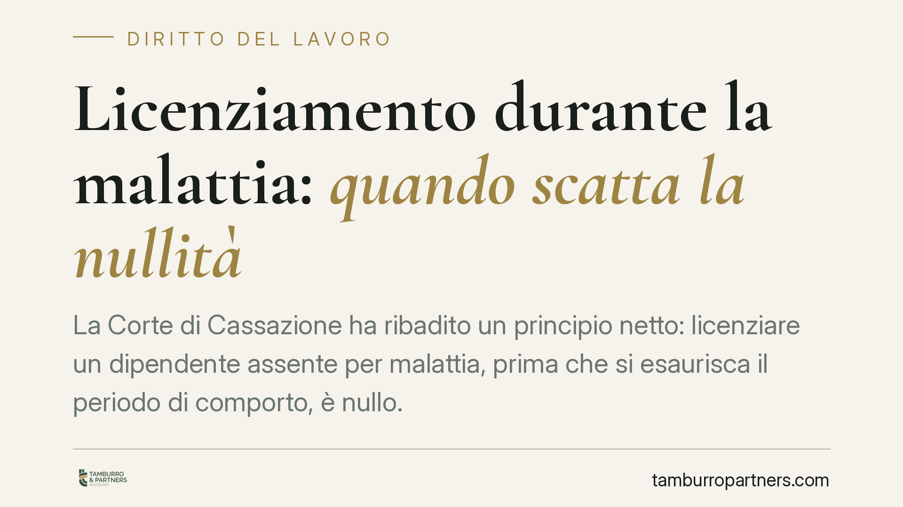
Il licenziamento intimato mentre il lavoratore è ancora in malattia, prima che si sia esaurito il periodo di comporto, è nullo. La nullità opera anche se il datore ha sbagliato i c…
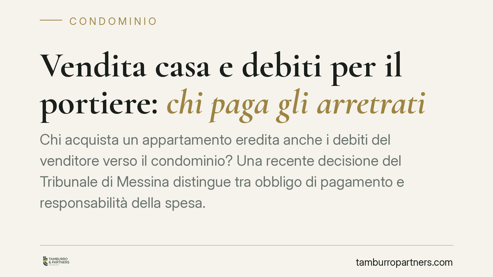
Chi compra un appartamento eredita anche gli arretrati del portiere lasciati dal venditore? Il Tribunale di Messina distingue tra obbligo di pagamento e ripartizione interna, ricor…
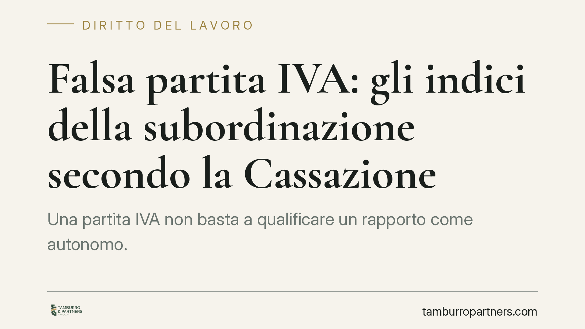
Una partita IVA non basta a qualificare un rapporto come autonomo. Quando orari fissi, compenso stabile e assenza di strumenti propri rivelano una vera subordinazione, il lavorator…
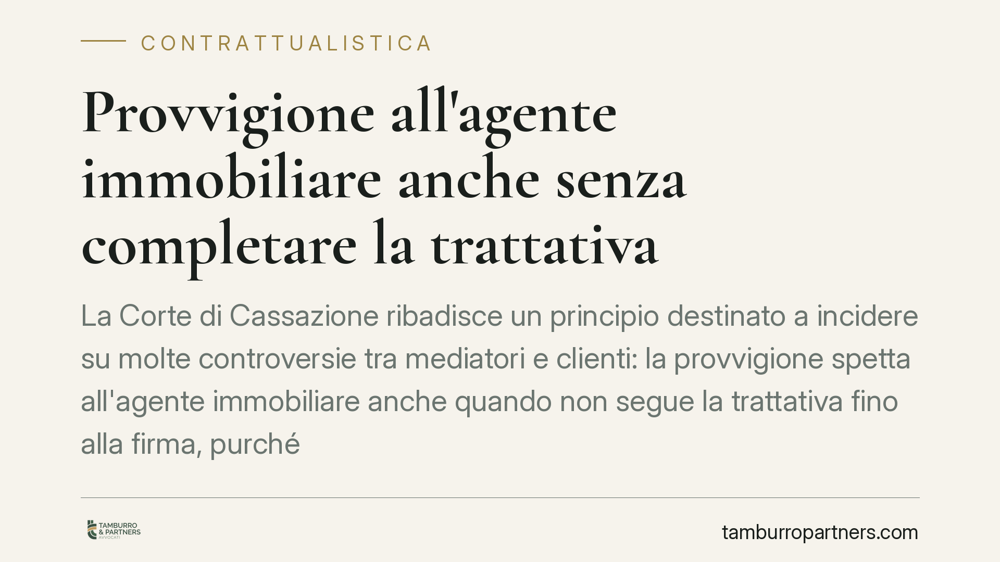
La Corte di Cassazione ribadisce un principio destinato a incidere su molte controversie tra mediatori e clienti: la provvigione spetta all'agente immobiliare anche quando non segu…
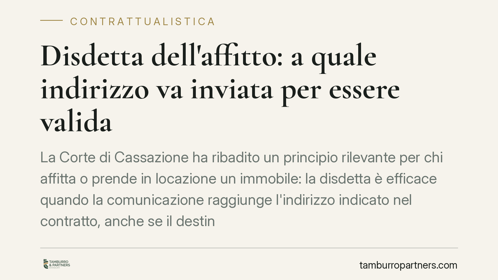
La Corte di Cassazione ha ribadito un principio rilevante per chi affitta o prende in locazione un immobile: la disdetta è efficace quando la comunicazione raggiunge l'indirizzo in…
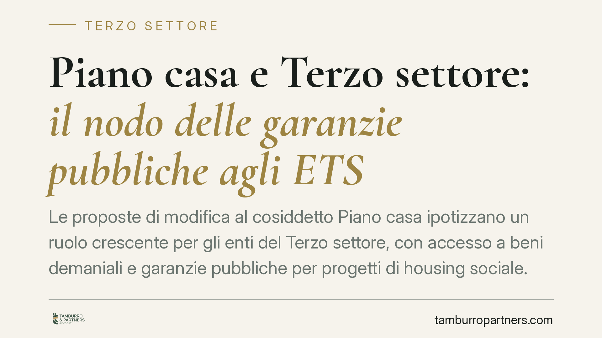
Le proposte di modifica al cosiddetto Piano casa ipotizzano un ruolo crescente per gli enti del Terzo settore, con accesso a beni demaniali e garanzie pubbliche per progetti di hou…
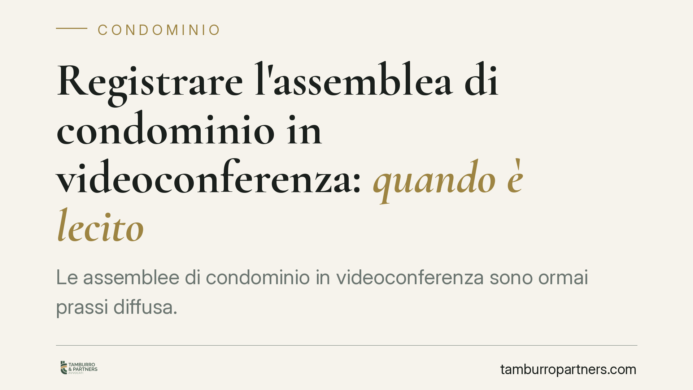
Le assemblee di condominio in videoconferenza sono ormai prassi diffusa. Ma il file audio-video che le immortala può essere conservato? Il Garante per la protezione dei dati person…
Il Decreto legge 62/2026 interviene su due fronti collegati: la definizione di salario adeguato e l'accesso agli incentivi contributivi per le assunzioni. Il testo, ancora in attes…
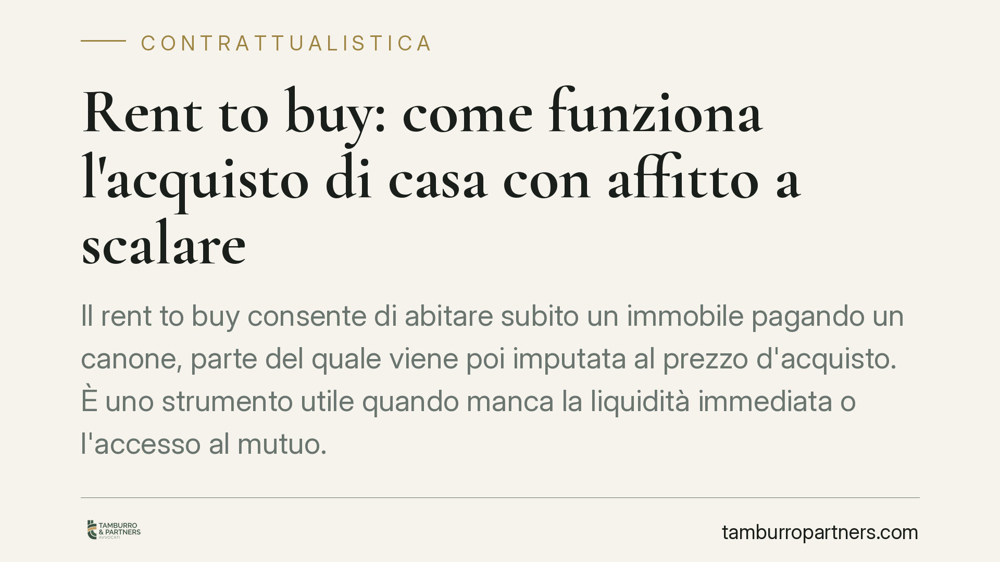
Il rent to buy consente di abitare un immobile pagando un canone, parte del quale viene imputata al prezzo di acquisto futuro. È uno strumento utile quando l'acquirente non dispone…
Il proprietario che chiede all'inquilino il rimborso delle spese condominiali deve provarle con rendiconti approvati dall'assemblea. Lo ribadisce il Tribunale di Roma con la senten…
Svolgere un'altra attività mentre si è in malattia non è sempre vietato, ma può costare il posto. La Corte d'Appello di Roma ha confermato un licenziamento per giusta causa dopo ch…
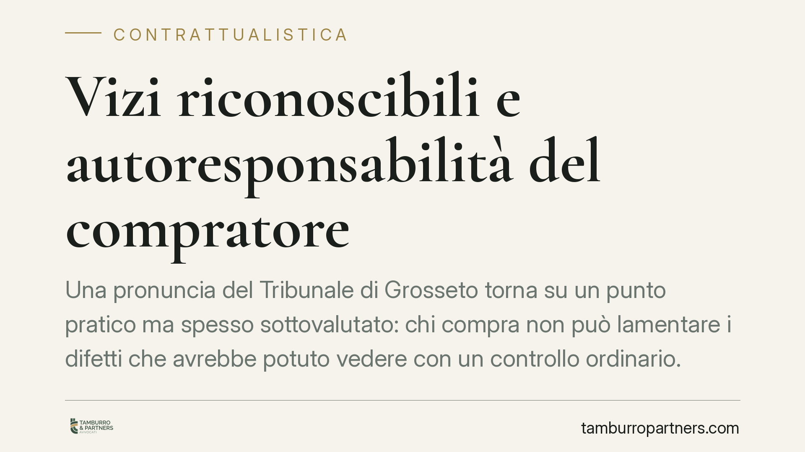
Una pronuncia del Tribunale di Grosseto torna su un punto pratico ma spesso sottovalutato: chi compra non può lamentare i difetti che avrebbe potuto vedere con un controllo ordinar…
Anche durante le ferie il dipendente pubblico ha diritto alle indennità di turno, notturno e festivo quando queste rappresentano una componente ordinaria della retribuzione. Il pri…
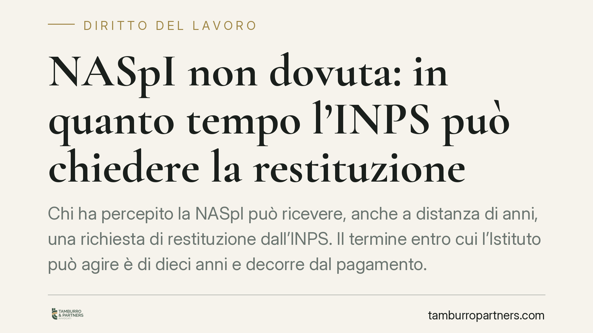
Chi ha percepito la NASpI può ricevere, anche a distanza di anni, una richiesta di restituzione dall'INPS. Il termine entro cui l'Istituto può agire è di dieci anni e decorre dal p…
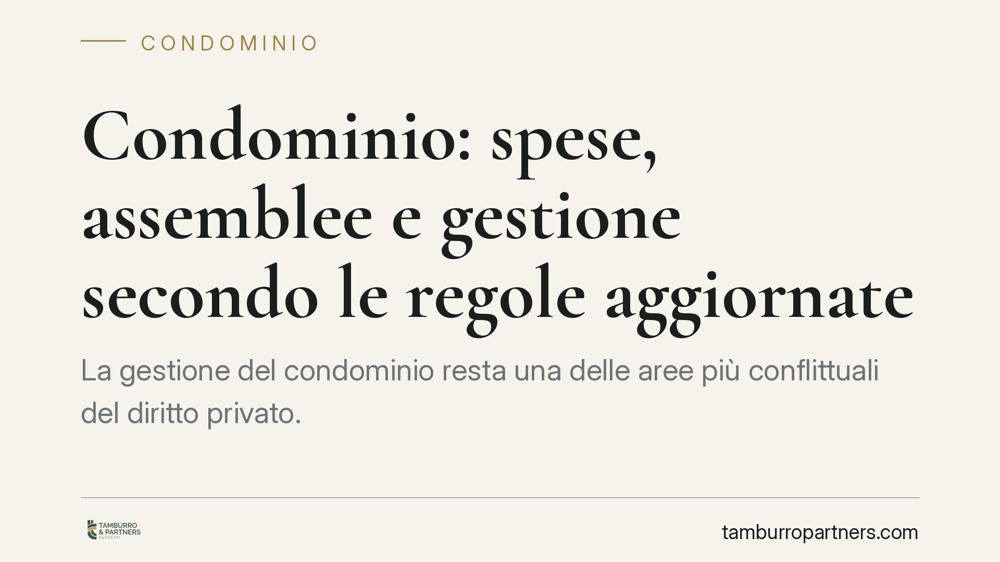
La gestione del condominio resta una delle aree più conflittuali del diritto privato. Tra ripartizione delle spese, validità delle assemblee e responsabilità dell'amministratore, i…
La Cassazione torna sul tema della sostituzione prolungata di un collega assente. Quando il dipendente svolge stabilmente mansioni superiori, può maturare il diritto alla promozion…
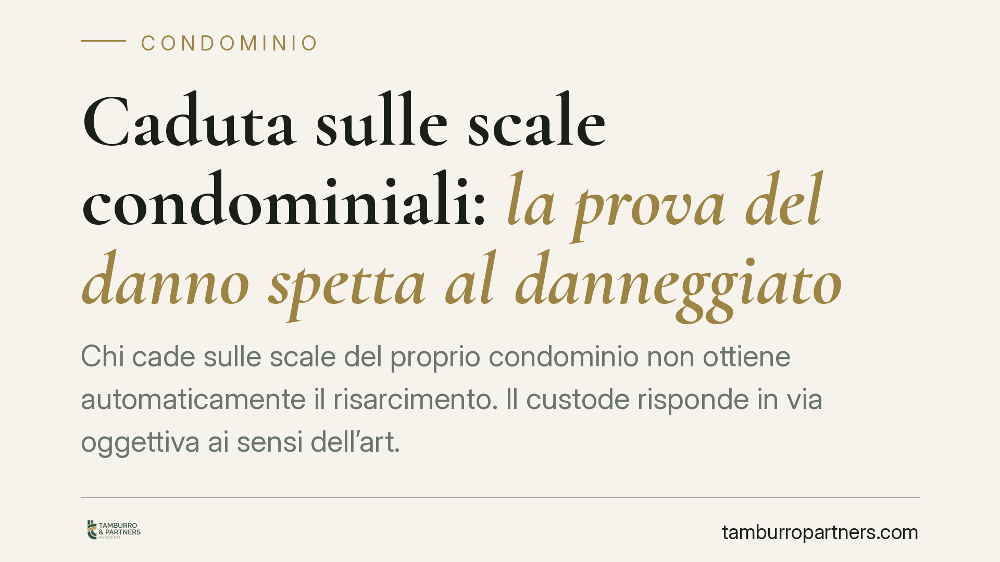
Chi cade sulle scale del proprio condominio non ottiene automaticamente il risarcimento. Il custode risponde in via oggettiva ai sensi dell'art. 2051 c.c., ma è il danneggiato a do…
Quando un lavoratore diventa inidoneo alle mansioni, il licenziamento non è automatico. Prima il datore deve verificare se esistono soluzioni organizzative ragionevoli per conserva…
La Cassazione torna sul rapporto tra malattia e controlli datoriali. Un lavoratore in malattia per depressione può svolgere attività esterne, purché non compromettano e anzi favori…
Sbagliare ripetutamente nella predisposizione di offerte commerciali può costare il posto di lavoro. La giurisprudenza di legittimità ammette il licenziamento quando gli errori, in…
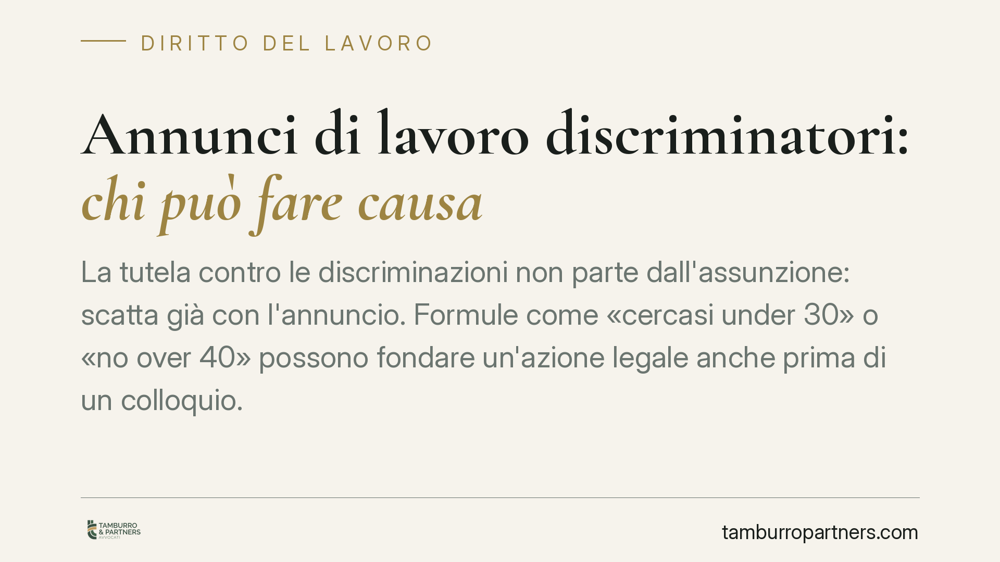
La tutela contro le discriminazioni non parte dall'assunzione: scatta già con l'annuncio. Formule come «cercasi under 30» o «no over 40» possono fondare un'azione legale anche prim…
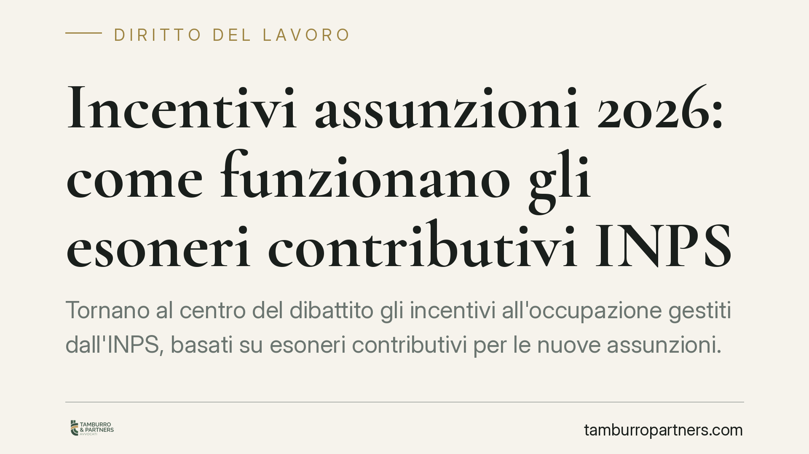
Tornano al centro del dibattito gli incentivi all'occupazione gestiti dall'INPS, basati su esoneri contributivi per le nuove assunzioni. Prima di pianificare il reclutamento sfrutt…